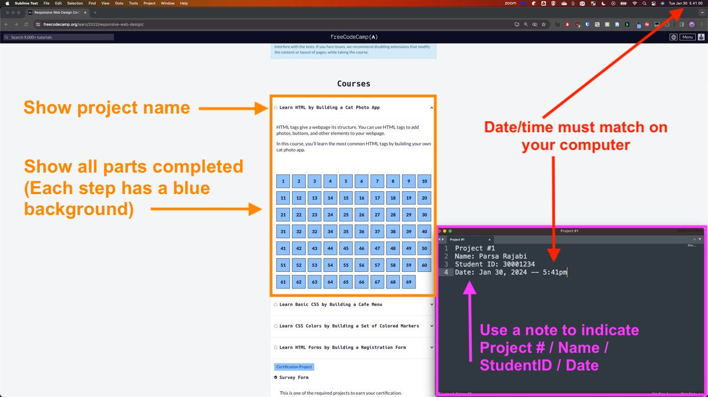

Projects#
Tip
Projects can NOT be submitted late. Failure to submit a project will result in a mark of zero unless prior arrangements are made with the course instructor.
About#
Projects are intended to be a practical application of the course material
All projects will be assigned and to be completed via freeCodeCamp.org
The freeCodeCamp curriculum is a series of challenges and projects that you can complete to earn certifications in various programming languages and technologies
You will be required to complete the projects and submit the completed screenshots
IMPORTANT: Some topics will be covered in class and some will be self-taught
Although most topics will be covered in class, the order of the projects may not align with the course schedule
We will do our best to align the projects with the course material, however, some projects may require you to learn new topics on your own until the class covers the topic later in the term
You are encouraged to use the resources available to you (e.g. W3Schools, Khan Acadamy, Youtube etc.) to complete the projects
All projects are to be completed individually
You are encouraged to ask questions and seek help from the instructor if you are stuck
You are encouraged to use the freeCodeCamp forums to ask questions and seek help from the community
Get Started#
Go to freeCodeCamp and sign up for an account
You must use your stuednt
@mylangara.caemail account to sign up
Once you have signed up, you can start working on the projects by visiting the Responsive Web Design page
Schedule#
Projects will be assigned throughout the semester. Please check D2L Brightspace for the project assignments and due dates.
Submission Process#
Projects should be completed via freeCodeCamp website and a screenshot of all completed work should be submitted to D2L Brightspace
The screenshot of completed work should include:
Your completed project
Show the project name
Make sure all the project sections are completed (note the blue background on each of the project steps)
You can break down the tasks into chunks and submit multiple screenshots
A note
Project #
Your Name
Your Student ID
Current Date/Time (this must match your system’s date/time)
Attention
Screenshot submissions without a note that includes the information above will recieve a 50% mark deduction. Failure to submit a screenshot will result in a mark of zero. No exceptions.
Example Screenshot#
Here is an example of how your screenshot(s) should look like. Make sure to include the all information required in the note and include the computer’s date/time in the screenshot.
Here’s how to capture a screenshot on Windows and Mac

D2L Brightspace Submission#
Here are the steps to submit your screenshot to Brightspace:
Go to Langara D2L Brightspace
Navigate to CPSC 1030 Course
Visit the course content page
Select
ProjectsFind the respective project
Submit your project screenshot
Project Auditing#
The instructor will audit the projects to ensure that the work is original and completed by the student. The instructor will also verify that the project is completed according to the requirements. Students who submit work that is not their own will receive a mark of zero and will be reported to the academic integrity office.